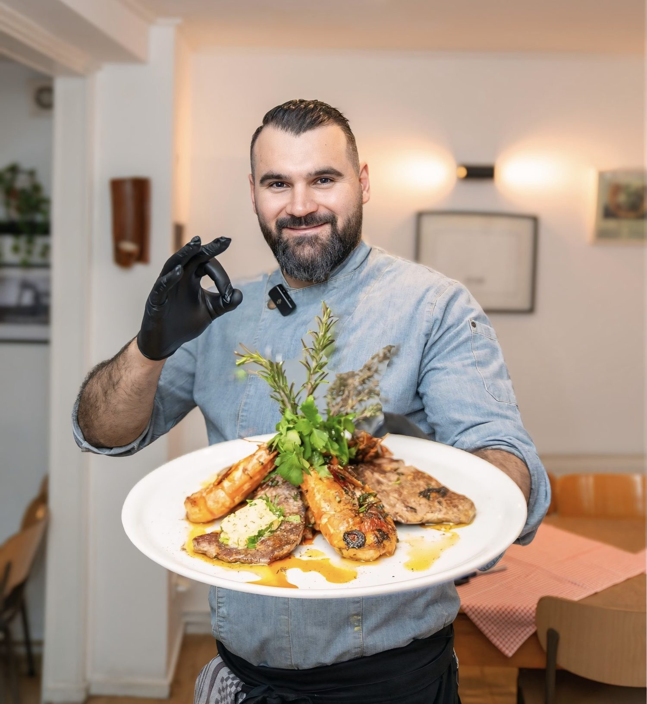
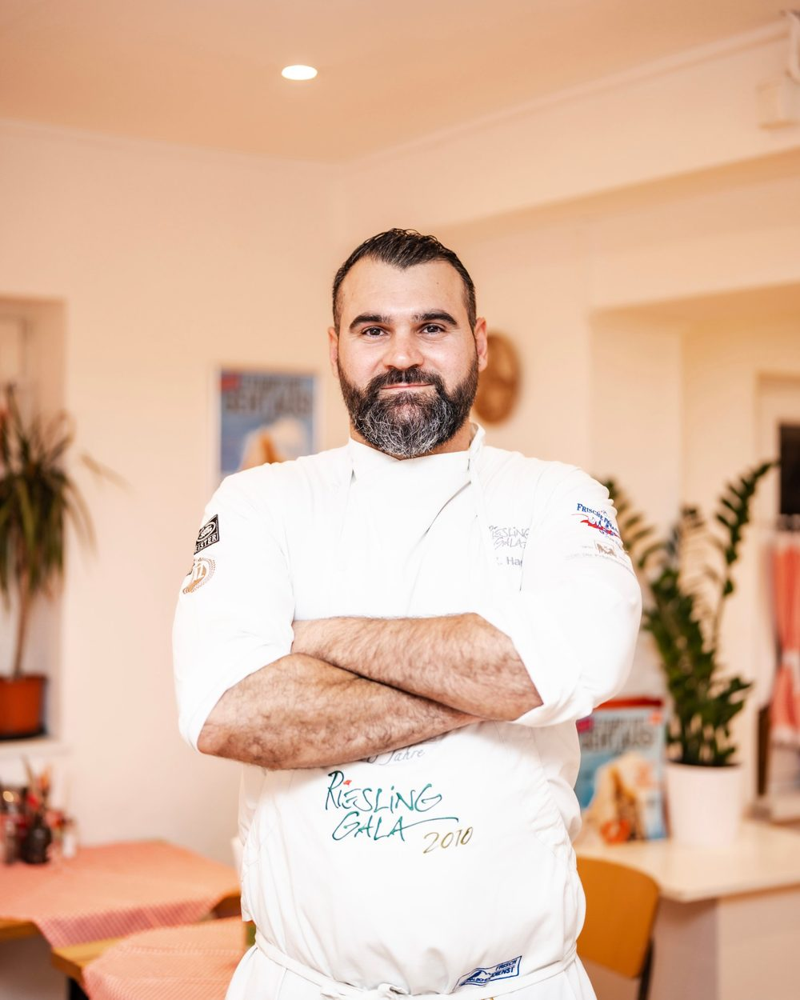
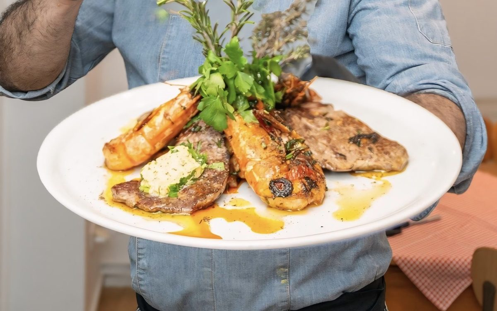

Koch · Gastgeber · Frankfurt
Frankfurt kennt Giulio aus seiner Pizzeria. Jetzt dreht er den Spieß um: Giulio besucht die Cafés, Bistros und Restaurants der Stadt – probiert, fragt nach und zeigt, was ihn begeistert. Die Kamera ist immer dabei.
Staffel 1 – die ersten fünf Folgen entstehen geradeGiulio Unterwegs – Koch Giulio zeigt Frankfurts beste Läden
- 4,9 ★aus rund 2.300 Bewertungen für die Pizzeria Giulio
- Nr. 1„Beliebteste Pizza“ beim Frankfurt-Tipp Readers’ Choice Award
- F.A.Z.2021 unter den Favoriten der Leserwahl zur besten Pizza Frankfurts
- 20 JahreKüchenerfahrung – Giulio ist gelernter Koch
Über uns
Ein Koch, eine Kamera, eine Stadt
In Frankfurt kennt man ihn einfach als Giulio: gelernter Koch, Pizzabäcker aus Leidenschaft und ein Gastgeber, bei dem man sich schon beim ersten Besuch wie ein Stammgast fühlt.
Rund zwanzig Jahre steht Giulio schon in der Küche, unter anderem an der Seite von Zwei-Sterne-Koch Matthias Schmidt. Anfang 2020, kurz vor der Pandemie, eröffnete er seine Pizzeria in der Wittelsbacherallee. Ein Jahr später fragte die F.A.Z. ihre Leser, wo es die beste Pizza Frankfurts gibt – mehr als 20 Leserbriefe schwärmten von Giulio, und seine Pizzeria kam in die Auswahl der Favoriten. 2022 wählte FRANKFURT GEHT AUS! sie auf Platz 1 im Frankfurter Osten.
Als der Laden zu klein wurde, zog Giulio an den Osthafen – und seine Gäste zogen mit. Dort wählten die Leser von Frankfurt-Tipp seine Pizza zur beliebtesten der Region, und seit Januar 2026 gibt es nebenan das Giulio Bistro & Burger.
Jetzt geht Giulio raus. Wer jeden Tag selbst am Herd steht, sieht sofort, wie viel Arbeit in einem guten Teller steckt. Genau mit diesem Blick besucht er andere Läden: neugierig, mit Respekt vor dem Handwerk und mit ehrlicher Freude am Essen. Kollege statt Kritiker.

Einmal Giulio, immer Giulio.Giulio

Hinter der Kamera
Aziel – Bilder, die man nicht wegwischt
Aziel ist Fotograf, Videograf und Regisseur aus Frankfurt und betreut schon die Social-Media-Kanäle von Giulio. Seine Musikvideos wurden auf YouTube über 600.000 Mal gesehen, ein Clip lief sogar im Musikfernsehen in Kasachstan.
Bei Giulio Unterwegs sorgt er dafür, dass man das Essen fast riechen kann: Licht, Schnitt und Rhythmus für Reels, die man bis zum Ende schaut.
Mehr von Aziel auf aziel.meDas Format
Kein Werbespot. Ein Besuch.
Giulio geht dahin, wo in Frankfurt mit Herz gekocht wird – vom Café um die Ecke bis zum Restaurant. Echte Begegnungen statt gestellter Clips: Koch trifft Koch.
-
Der Besuch
Giulio kommt vorbei, lernt euch kennen und schaut hinter die Theke: Wer steht hier am Herd, und was macht euren Laden besonders?
-
Das Probieren
Er probiert eure Lieblingsgerichte, fragt nach Zutaten und Handgriffen – mit dem Blick und der Sprache eines Kochs.
-
Der Dreh
Aziel filmt im Kino-Look: kurze Reels für Instagram und TikTok, längere Folgen für YouTube.
-
Die Folge
Das Video läuft auf unseren Kanälen, und ihr teilt es auf euren. So erfährt Frankfurt, was bei euch auf den Teller kommt.
Frankfurt am Main
Frankfurt hat mehr gute Küchen, als man in einem Leben besuchen kann.
Wir fangen trotzdem an. Laden für Laden, Teller für Teller – und Giulio mittendrin.
Staffel 1
Die ersten Folgen
Fünf Läden, fünf Geschichten. Wohin es geht, verraten wir, sobald die Folgen online sind.
-
Bald online
Folge 01
Ort wird zum Start verraten
-
Bald online
Folge 02
Ort wird zum Start verraten
-
Bald online
Folge 03
Ort wird zum Start verraten
-
Bald online
Folge 04
Ort wird zum Start verraten
-
Bald online
Folge 05
Ort wird zum Start verraten
Videos werden erst nach dem Klick von YouTube geladen.

Für Cafés & Restaurants
Euer Laden in der Show
Gründungsphase: Die ersten Folgen drehen wir kostenlos
Ihr kocht mit Leidenschaft und wollt, dass Frankfurt davon erfährt? Giulio bringt sein Netzwerk und das Vertrauen seiner Gäste mit, Aziel die Bilder. Zusammen machen wir aus eurem Laden eine Geschichte, die Leute sehen wollen.
- Besuch & Dreh mit Giulio bei euch vor Ort1 Termin
- Reel für Instagram & TikTokinklusive
- Veröffentlichung auf unseren Kanäleninklusive
- Fotos & Videomaterial für eure Kanäleauf Anfrage
Gemeinsam wachsen
Für Marken, Lieferanten & Events
Ihr sucht ein Gesicht, dem Frankfurt beim Essen vertraut? Ob Food-Marke, Lieferant, Event oder Festival – lasst uns zusammen etwas aufbauen, das bleibt.
Kontakt
Wo soll Giulio als Nächstes hin?
Ihr habt einen Laden, eine Idee für eine Kooperation oder einen Geheimtipp, den Giulio unbedingt probieren muss? Schreibt uns.